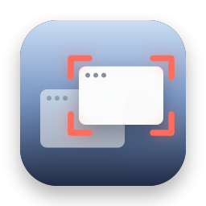
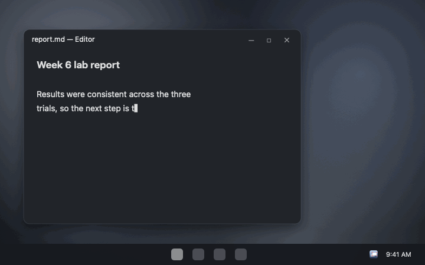

Who Stole My Focus
You're typing, and your words land in some other window. Who Stole My Focus sits in the tray, logs every app that comes to the front on its own, and names the culprit. Now on Windows, with the same rules as the Mac app.

free · open source · windows 10 and 11 · x64 and arm64 · no admin · no internet access
What you get
- The culprit, by name, with what it took focus from, when, and how long it stayed.
- Steals while you type, caught with a second look 0.4 seconds after each switch.
- Your own switches left out: clicks, Alt+Tab, shortcuts, Start, Search, launchers and apps you just opened.
- Parts of Windows explained, like CredentialUIBroker asking for your PIN.
- Top offenders, the full log, Copy as CSV and optional notifications.
What it never does
- Know which key you pressed. It notes only when you clicked or typed, and whether a key was a modifier.
- Read your windows. Only the name of the app in front, never a title or what's in it.
- Go online, or ask for admin. No networking code, no service, no driver. CI checks every build.
Questions
How do I find out what's stealing focus on Windows?
Run Who Stole My Focus and wait for it to happen again. Click its tray icon: the latest steal is at the top, with the app's name, what it took focus from and when.
My game keeps minimizing. Will this find out why?
Usually. When something takes focus from a full-screen game, it's logged with the game as what it took focus from. Apps running as administrator show as an app Windows won't name.
Does it read what I type?
No. It notes only when you last clicked or pressed a key, and for keys only whether it was a modifier like Alt. SECURITY.md lists exactly what it reads.
Is it a FocusLogger alternative?
Yes. Both log which process takes focus. This one also judges each switch against what you did just before, so your own switches aren't listed as thefts.
Windows says it protected my PC. Is it safe?
The app isn't signed with a paid certificate, so SmartScreen warns the first time. The code is open source and each download is built by CI from it. Click More info, then Run anyway.